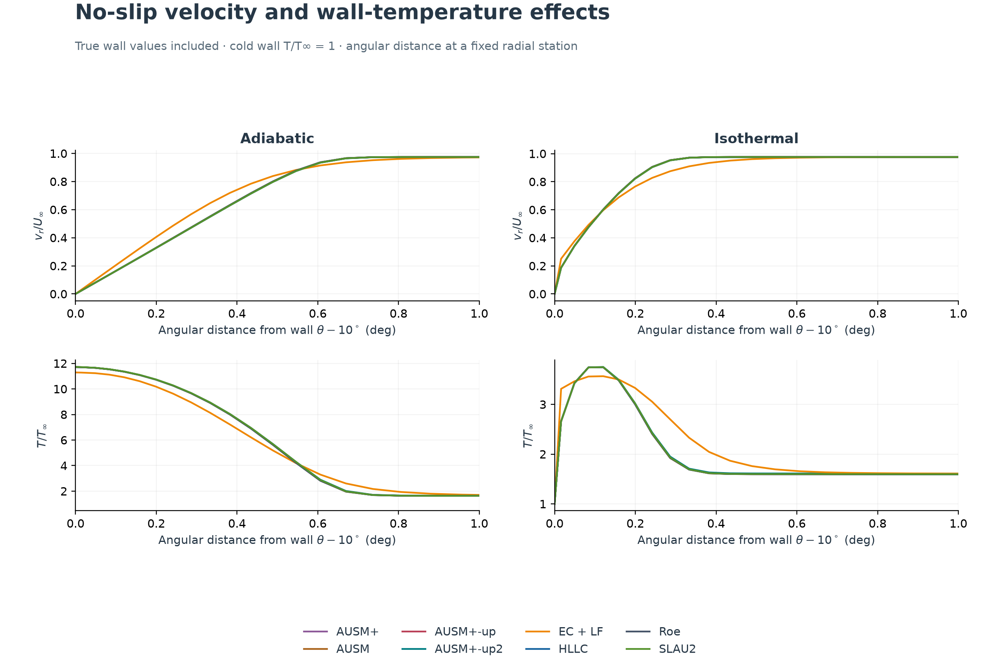
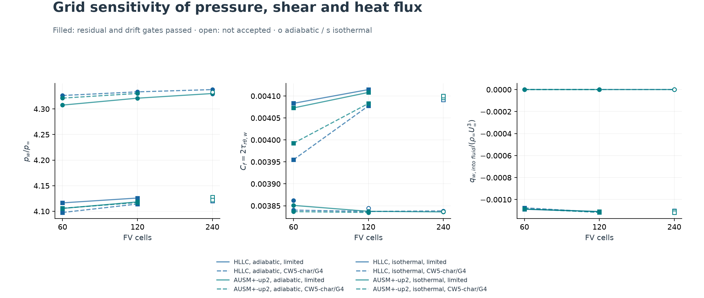
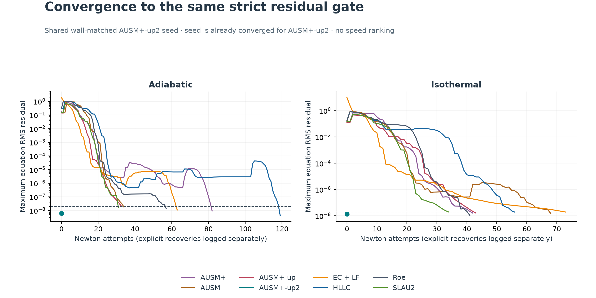
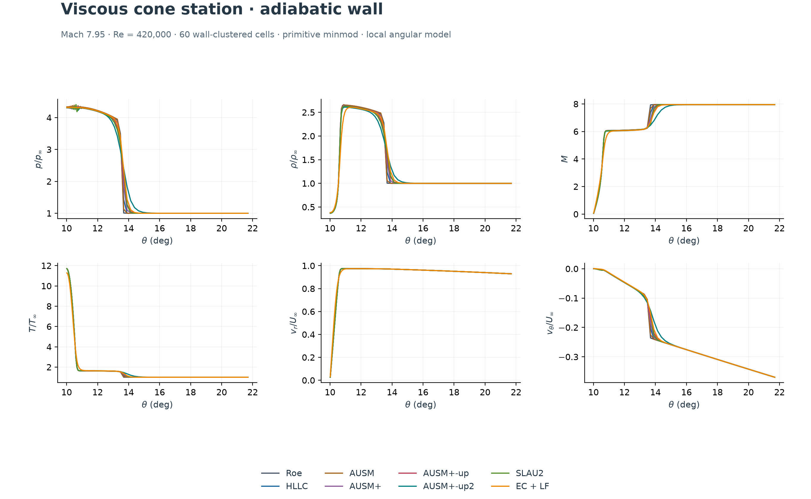
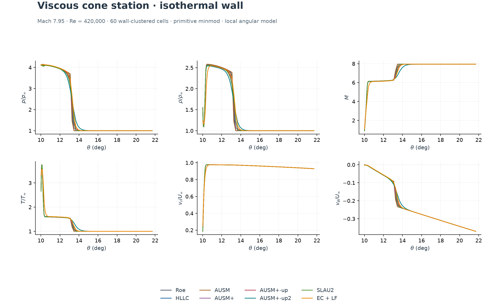
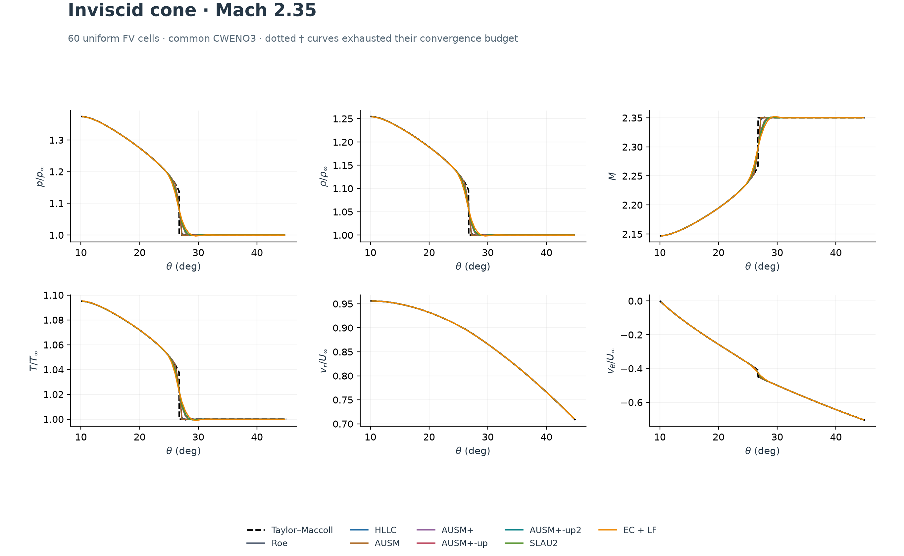
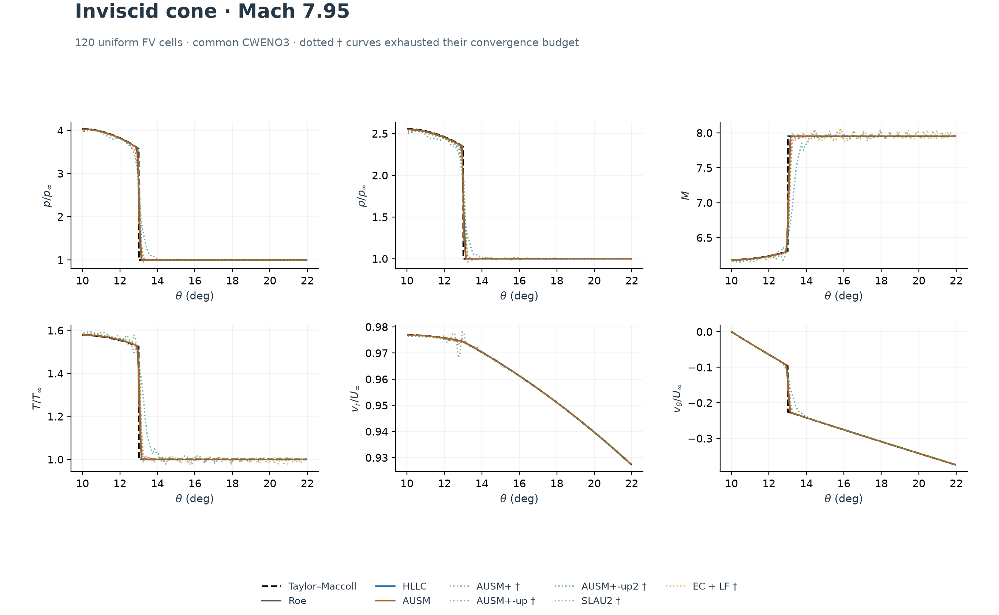
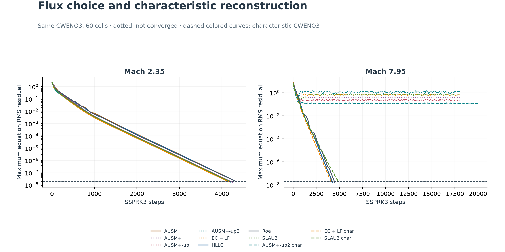
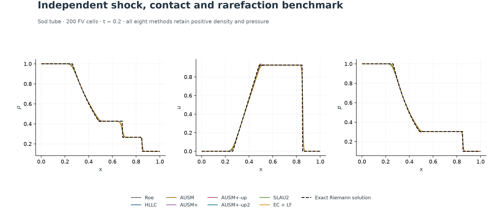
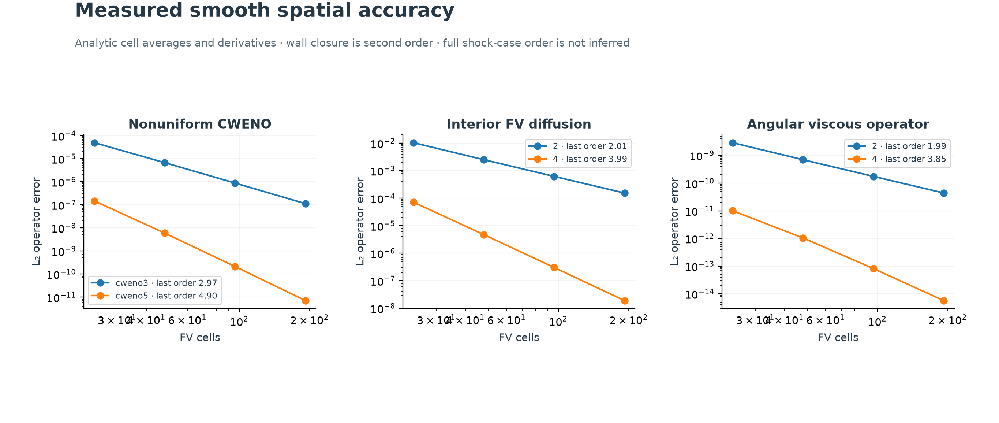

14/24
component-wise inviscid runs converged
16/16
primary 60-cell viscous comparison converged
9/12
CWENO5-characteristic / G4 runs converged
Including all refinement attempts, 29 of 36 corrected-wall viscous states passed the residual gate.
What was implemented
AUSM (1993), AUSM+ (1996), AUSM+-up (2006), AUSM+-up2 and SLAU2 (2013), and a Chandrashekar entropy-conservative flux with local LF dissipation (2013). These are established research algorithms newly implemented in this course code; they are not algorithms invented in 2026. Roe and HLLC remain baselines. The same inviscid face routines serve Euler and viscous equations.
Viscous physics include Newtonian stresses, Sutherland viscosity, heat conduction, Pr = 0.72, Re = 420,000, no-slip walls and separate adiabatic/isothermal conditions. A quadratic fit to two primitive control-volume averages supplies the second-order wall gradient; source quadrature uses the same wall boundary polynomial. Interior fourth-order diffusion and characteristic CWENO3/5 are optional.
Physical scope and acceptance
The original angular viscous model is a local fixed-radial-station approximation. Primitive radial gradients are suppressed while spherical stress geometry is retained. Re changes with radius in real flow; this solver does not predict downstream boundary-layer growth. The result is not full axisymmetric Navier–Stokes cone validation. No turbulence, transition, real-gas chemistry or external CFD software is included.
The inviscid reference is independently integrated Taylor–Maccoll flow. It is not a viscous reference. A run passes only when the maximum RMS residual over all four conservation equations is below 2×10⁻⁸. Every accepted Newton solution also passes a 20-step explicit SSPRK drift check. Constitutive checks, exact Sod flow, Couette heating and analytic smooth operators give independent evidence. Viscous benchmark validation against experiment or a full 2-D reference remains open.
The quadratic FV wall fit is formally second order with accurate primitive averages. G2 infers primitives directly from conservative means; G4 deconvolves them. This distinction can affect wall heat/shear accuracy; a coupled global wall order is not claimed. Early explicit and cold-Newton failures are preserved separately. The first exploratory wall derivative was first order; only filenames starting fv2-steady- or their continuations use the corrected quadratic FV wall closure. Raw exploratory metadata predates that correction and is not part of the accepted comparison. Nonconverged states remain visible with status markers.
Near wall profiles
Velocity decreases to zero at a stationary wall. The adiabatic wall heats through viscous dissipation; the isothermal wall removes heat.
Vector PDF
Grid and wall transport
Grid refinement is part of the assessment. Open markers are not accepted steady solutions.
Vector PDF
Steady convergence
Shared coarse seeds make these convergence histories reproducible, but they favor the seed flux in iteration count. They are not runtime rankings.
Vector PDF
Viscous properties adiabatic
Local angular profiles at an adiabatic cone station.
Vector PDF
Viscous properties isothermal
Local angular profiles at a cold isothermal cone station.
Vector PDF
Euler properties m2.35
All eight component-wise CWENO3 runs converged on the Mach 2.35 grid.
Vector PDF
Euler properties m7.95
Dotted inviscid curves did not meet the residual gate; their apparent pressure accuracy is not accepted validation.
Vector PDF
Euler convergence
Characteristic reconstruction cures the recorded SLAU2 and EC+LF coarse-grid inviscid failures; AUSM+-up2 still requires additional robustness work.
Vector PDF
Sod comparison
Independent planar exact-solution check separates flux correctness from cone geometry.
Vector PDF
Spatial verification
Order tests use exact control-volume averages and analytic derivatives. They establish smooth operator accuracy, not global shock or wall convergence order.
Vector PDF
Inviscid run table
Corrected-wall viscous run table
Reproduce
Run from the conical directory. NumPy and Matplotlib are the only third-party dependencies. Shared seeds and their configuration are included. Dense Newton matrices are for teaching-size meshes; this is not a production large-mesh performance claim.
python verify_extension.py
python shock_tube.py
python extension_study.py euler --grids 60 120
python extension_study.py characteristic --grids 60
python extension_study.py steady-warm --grids 60
python extension_study.py steady-refine --grids 120 240
python extension_study.py steady-high-order --grids 60 120 240
python extension_report.py
See equations, source audit and implementation choices. Fields are supplied as NPZ and CSV; per-run JSON records all physical parameters, convergence, solver details and wall transport. The ZIP manifest records final source hashes. Concurrent seeded timings are not speed rankings.
Primary references